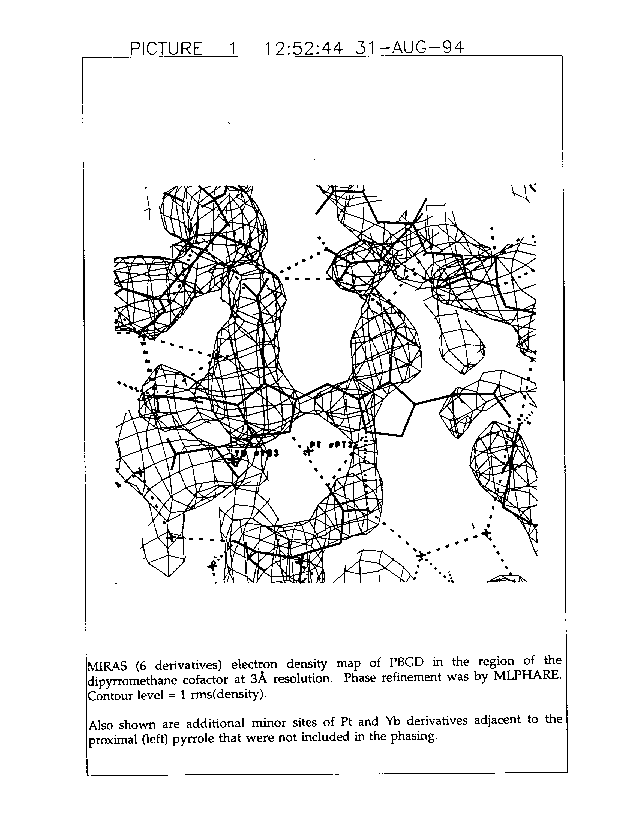
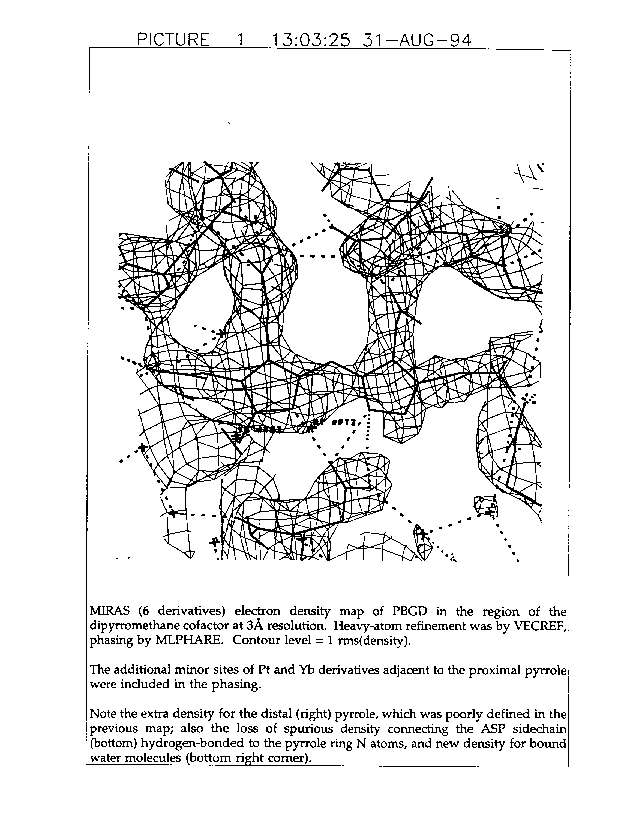

|
CCP4i: Graphical User Interface |
| MIR Tutorial Bath - Phasing statistics |
 |
BACK TO INDEX |  |
Undoubtedly the most useful indicators of the validity of a heavy-atom site are the real occupancy and the atomic thermal parameters, followed by the reduction in RCullis, as previously indicated. The statistics produced by MLPHARE that are used for judging a derivative as a whole are the RCullis and the phasing power. Values of RCullis < 0.6 for centrics are considered excellent, < 0.9 usable. For the anomalous data any RCullis (mean |observed - calculated anomalous difference| / mean |observed anomalous difference|) less than 1 is considered to be providing significant phasing information.
The measure of quality of a derivative that is usually quoted is the phasing power (mean heavy-atom amplitude / mean P-weighted lack of closure error). Values of the phasing power > 1.5 are considered excellent, > 1 good, > 0.5 usable. Note that MLPHARE has the option of giving either arithmetic or root mean square (rms) averages; however although the rms average is the theoretically correct one, it is much more sensitive to the presence of outliers (i.e. unexpectedly large errors for a few individual reflections), which will produce underestimates of both RCullis and the phasing power.
Other statistics that should be checked are the mean and standard deviation of the absolute phase difference between FP and FH. Provided the data were accurately scaled there should be no reason to expect the phase of FP to be related to that of FH, so this is a good check of the scaling. The mean absolute phase difference should be 90° (within about 10°), and the standard deviation should be 52° for acentric and 90° for centric reflections, though the expected standard deviations will probably only be attained in the MIR case, and not for SIR.
All the above statistics should be checked for each derivative as a function of resolution, as well as for the complete data. The statistic that is most often quoted, the mean figure of merit is a measure of the precision of the "best" phase, in fact it is the mean of cosine(phase error).
The PBGD derivatives were originally refined and phased initially with PHARE and later with MLPHARE. The author repeated the whole procedure (including the scaling) completely blind, but using VECREF for refinement and MLPHARE for phasing. The results are shown in the tables below.
| Acentric | Centric | |||||||
|---|---|---|---|---|---|---|---|---|
| Derivative | Sites | RCullis Isomorphous |
RCullis Anomalous |
Phasing power |
<|Df|> (s) |
RCullis | Phasing power |
<|Df|> (s) |
| Uranyl fluoride |
4 | 0.72 | 0.83 | 1.62 | 84.8° (55) |
0.78 | 1.12 | 88.3° (90) |
| Uranyl acetate |
3 | 0.75 | 0.85 | 1.45 | 85.4° (55) |
0.83 | 1.04 | 89.0° (90) |
| Uranyl sulphate |
1 | 0.91 | - | 0.72 | 85.5° (54) |
0.90 | 0.57 | 84.5° (90) |
| Chloro- platinite |
1 | 0.91 | 0.94 | 0.76 | 88.2° (52) |
0.93 | 0.54 | 87.8° (90) |
| Ytterbium chloride |
1 | 0.91 | - | 0.74 | 88.1° (53) |
0.90 | 0.57 | 92.1° (90) |
| PCMBS (Hg) | 2 | 0.93 | 0.98 | 0.57 | 88.8° (52) |
0.88 | 0.53 | 89.1° (90) |
| Acentric | Centric | |||||||
|---|---|---|---|---|---|---|---|---|
| Derivative | Sites | RCullis Isomorphous |
RCullis Anomalous |
Phasing power |
<|Df|> (s) |
RCullis | Phasing power |
<|Df|> (s) |
| Uranyl fluoride |
5 | 0.74 | 0.79 | 1.50 | 83.5° (53) |
0.77 | 1.14 | 86.2° (90) |
| Uranyl acetate |
7 | 0.74 | 0.79 | 1.44 | 83.2° (52) |
0.78 | 1.13 | 87.6° (90) |
| Uranyl sulphate |
1 | 0.88 | - | 0.96 | 83.5° (53) |
0.92 | 0.72 | 84.8° (90) |
| Chloro- platinite |
6 | 0.85 | 0.89 | 1.22 | 87.6° (52) |
0.87 | 0.93 | 83.1° (90) |
| Ytterbium chloride |
3 | 0.93 | - | 0.76 | 88.5° (53) |
0.91 | 0.67 | 93.6° (90) |
| PCMBS (Hg) | 3 | 0.90 | 0.97 | 0.88 | 89.2° (53) |
0.85 | 0.78 | 91.7° (90) |
The table below shows the weighted mean phase errors, i.e. MIRAS phases relative to the final calculated phases after least-squares refinement (R = 0.188 to 1.76Å), and mean FOM by resolution shells for PBGD MIRAS phase sets A, B, C and D, where:

For phase set A, the MLPHARE phased refinement procedure was used.
For phase set B, the sites used for set A were refined again with VECREF.
Then MLPHARE was used in phasing-only mode.

For phase set C, the MLPHARE phasing / VECREF refinement procedure was used.
For phase set D, the sites used for set C were refined and phased again with MLPHARE.
| Set A | Set B | Set C | Set D | |||||
|---|---|---|---|---|---|---|---|---|
| Resolution | error(f) | <FOM> | error(f) | <FOM> | error(f) | <FOM> | error(f) | <FOM> |
| 19.5-6.0Å | 40.2° | 0.82 | 39.6° | 0.84 | 37.4° | 0.88 | 37.4° | 0.88 |
| 6.0-4.8Å | 42.5° | 0.76 | 41.3° | 0.79 | 37.7° | 0.84 | 39.4° | 0.83 |
| 4.8-4.2Å | 44.2° | 0.72 | 44.2° | 0.74 | 39.6° | 0.77 | 41.1° | 0.77 |
| 4.2-3.8Å | 52.0° | 0.67 | 49.1° | 0.67 | 46.4° | 0.71 | 50.1° | 0.70 |
| 3.8-3.5Å | 56.2° | 0.64 | 52.3° | 0.64 | 52.1° | 0.66 | 53.6° | 0.68 |
| 3.5-3.3Å | 60.9° | 0.58 | 57.5° | 0.57 | 52.1° | 0.60 | 56.2° | 0.61 |
| 3.3-3.1Å | 59.2° | 0.55 | 54.6° | 0.54 | 53.5° | 0.57 | 56.3° | 0.57 |
| 3.1-3.0Å | 61.2° | 0.48 | 57.3° | 0.46 | 55.5° | 0.47 | 59.6° | 0.50 |
| 19.5-3.0Å | 47.3° | 0.67 | 45.5° | 0.68 | 42.6° | 0.71 | 44.4° | 0.71 |
|
BACK TO INDEX | |
{kind=link}
{kind=link}
{kind=link}